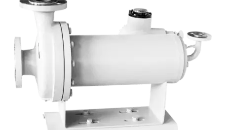

Официальный дистрибьютор насосного оборудования Teikoku на территории Украины
Перекачка токсичных, взрывоопасных, дорогих, опасных и агрессивных жидкостей без утечк
Идеально подходит для закрытых вакуумных систем или для жидкостей, которые реагируют на контакт с воздухом.
Не требует сальникового и механического уплотнений, а также других уплотнительных колец. Полное отсутствие уплотнительный систем между вращающимися и неподвижными частями насоса. Отсутствие механических торцевых уплотнений и сальников приводит к высокой надежности и гарантии герметичности, а также к отсутствию затрат на ремонт уплотнений и замену трущихся частей.
Охлаждение и смазка двигателя и подшипников осуществляется с помощью перекачиваемой жидкости. Поэтому не требуется проверка уровня смазки и её регулярный контроль.
Электродвигатель и насос представляют собой единый блок. Не требуется проводить центровку насоса и подготавливать сложный фундамент.
Низкий уровень шума, так как для охлаждения двигателя не используются вентиляторы. Все вращающиеся детали расположены внутри толстого корпуса.
поскольку отсутствует необходимость в регулярном контроле смазки и протечек.
Расход: Макс. 380 м3/ч
Общий напор: Макс. 180 м
Мощность: Макс. 110 кВт
Герметичный насос FA-V используется для перекачивания различных химических растворов, так же при нагнетании под высоким давлением. Насосы могут использоваться в работе с радиоактивными жидкостями.
Расход: Макс. 420 м3/ч
Общий напор: Макс. 160 м
Мощность: Макс. 120 кВт
Вертикальный центробежный герметичный насос типа FW является компактной конструкцией с самовентилируемым внутренним пространством и оснащен полым валом. Малогабаритная монтажная площадка делает возможным их монтаж на скиде и в оборудовании других производителей. Герметичные насосы типа FW не требуют технического обслуживания (ТО) уплотнения и связанного с ним простоя. Насосы типа FW могут встраиваться непосредственно в трубопровод по принципу инлайн (в одну линию).
Расход: Макс. 120 м3/ч
Общий напор: Макс. 600 м
Мощность: Макс. 220 кВт
Для чистой воды, горячей воды, химикатов, вакуумной серии, серии с высоким давлением и жидкостей с применением ядерной энергии, а так же для обратного осмоса, в электронике, фармацевтике и производстве полупроводников. Насосы данного типа имеют низкий уровень шума и низкий расход
Расход: Макс. 380 м3/ч
Общий напор: Макс. 180 м
Мощность: Макс. 220 кВт
Для органических и неорганических химикатов в химической промышленности, вакуумной серии, для широкого ряда жидкостей без содержания твердых примесей, с высоким давлением, радиоактивных жидкостей и других сред ядерных реакторов. В насосе типа FV организована внутренняя циркуляция рабочей среды и модель может быть оснащена полым валом. Возможно исполнение из нержавеющих сталей 304 SS, 316 SS и других высоколегированных сталей и сплавов. Возможно оснащение герметичных насосов типа FV рубашкой нагрева или охлаждения корпуса, как двигателя, так и проточной части насоса.
Расход: Макс. 780 м3/ч
Общий напор: Макс. 180 м
Мощность: Макс. 220 кВт
Герметичные горизонтальные центробежные насосы типа F и типа FA предназначены для перекачивания органических и неорганических химикатов при работе под вакуумом или с высоким давлением, а также для использования в ядерной промышленности в том числе для перекачивания радиоактивных жидкостей.
Расход: Макс. 780 м3/ч
Общий напор: Макс. 350 м
Мощность: Макс. 220 кВт
Модель RW разработана для бессальникового, герметичного перекачивания летучих жидкостей при высокой или низкой температуре под высоким давлением системы до и выше 35 MPa (5000 psi). Область применения от ядерных и химических процессов до циркуляции горячей воды в испытательных контурах и циркуляции очень важных жидкостей. Насосы типа RW могут встраиваться непосредственно в трубопровод по принципу инлайн (в одну линию).
Расход: Макс. 780 м3/ч
Общий напор: Макс. 180 м
Мощность: Макс. 220 кВт
Самопромывающийся герметичный насос типа R с низким требуемым NPSH разработан для перекачивания летучих жидкостей, сжиженных газов и хладагентов таких, как аммиак, синтетические фреоны и другие жидкости с низкой точкой кипения. Существует горизонтальная и вертикальная модификация данного насоса. Возможна эксплуатация насоса типа R от очень низких до очень высоких температур рабочей среды.
Расход: Макс. 420 м3/ч
Общий напор: Макс. 160 м
Мощность: Макс. 120 кВт
Вертикальный герметичный насос типа RV с обратной циркуляцией разработан для перекачивания жидкостей с высоким давлением паров и летучих углеводородов. Вертикальная конструкция и обратная циркуляция обеспечивают более легкое вентилирование и стабильную длительную эксплуатацию в системах с низким NPSH. Насосы типа RV могут встраиваться непосредственно в трубопровод по принципу инлайн (в одну линию).
Расход: Макс. 96 м3/ч
Общий напор: Макс. 35 м
Мощность: Макс. 37 кВт
Центробежные герметичные насосы типа L комплектуются индъюсером и предназначены для работы с очень низким NPSH, в том числе и в глубоком вакууме. Широко используются для перекачивания жидкостей охлаждения рефрижераторов абсорбционного типа и абсорбирующих жидкостей. Насосы типа L изготавливаются во фланцевом исполнении или под сварку на месте
Расход: Макс. 420 м3/ч
Общий напор: Макс. 160 м
Мощность: Макс. 120 кВт
Вертикальный центробежный герметичный насос типа E размещается на монтажной плите и имеет контур обратной собственной циркуляции. Возможно оснащение на всасе индъюсером для уменьшения NPSH. Основным применением насоса типа E является перекачка сжиженных нефтяных газов.
Расход: Макс. 80 м3/ч
Общий напор: Макс. 80 м
Мощность: Макс. 11 кВт
Насос для охлаждающей системы локомотива.